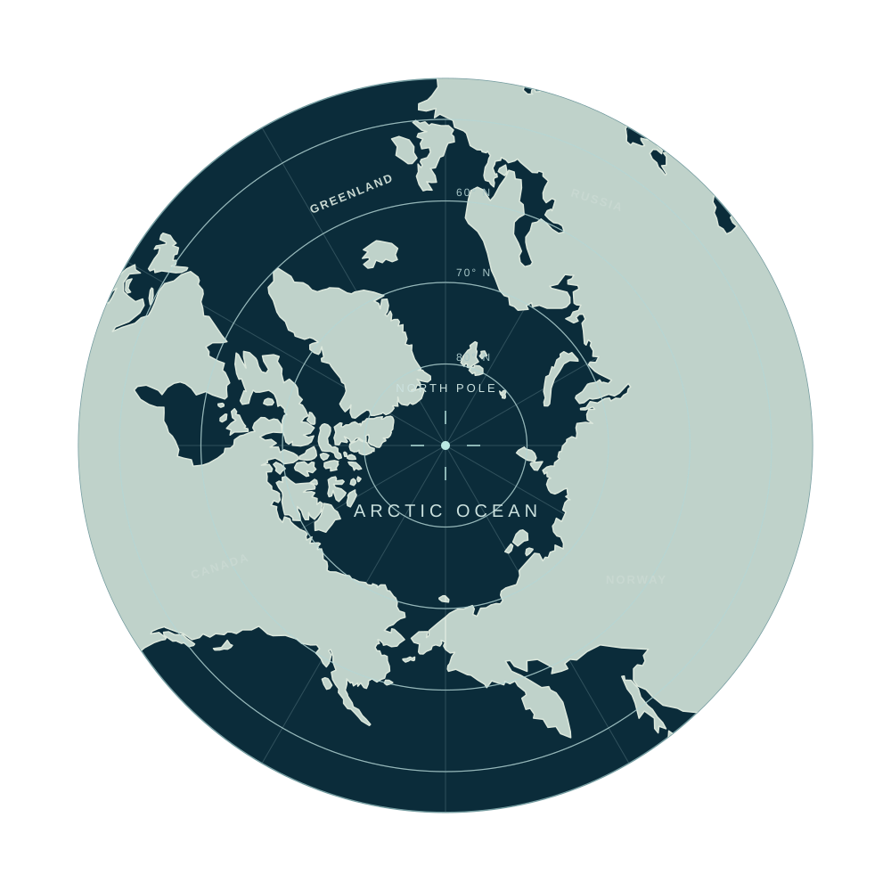

Richard Fraser
Organizer
A polar research project spanning five countries, organized by Richard Fraser and supported by our research partners.
A polar research project spanning five countries, organized by Richard Fraser and supported by our research partners.

This sample project explores how field observations could document polar bear movement and sea-ice habitat. A full project page could bring together methods, photographs, route maps, and research updates.
This sample project shows how seasonal field records could follow Arctic foxes across tundra habitats. Its future archive could combine observation notes, images, local context, and environmental data.
Field imagery, research methods, and traces of environmental change.
Field materials on local experience, ways of life, and knowledge passed on.
Images, sound, and research writing gathered into an accessible archive.
Universities and supporters contributing to the project.